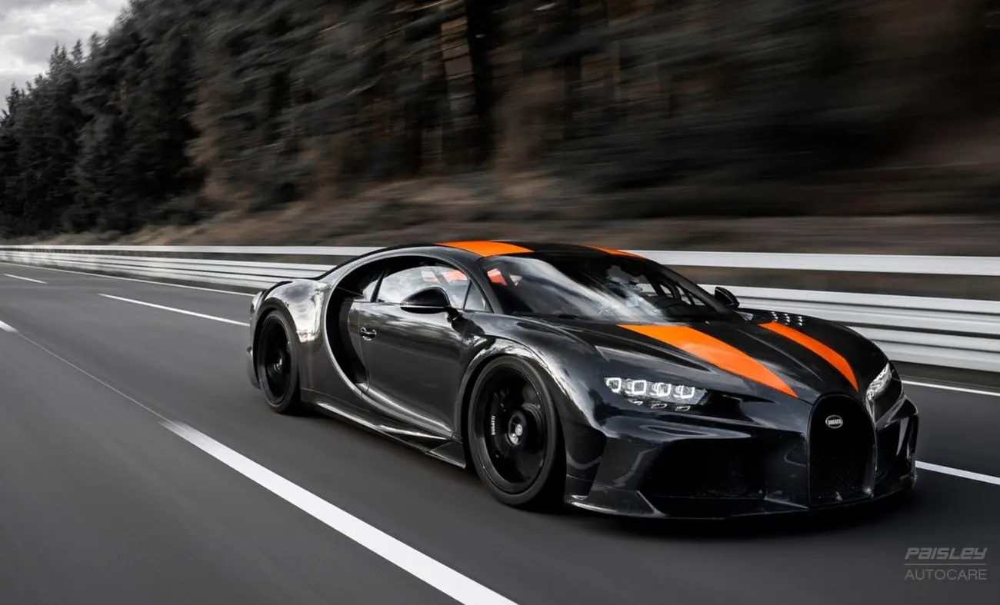

ეტორე ბუგატი დაიბადა მილანში, 1881 წლის 15 სექტემბერს. მისი მამა კარლო ბუგატი იყო ცნობილი მოქანდაკე, რომლის ნამუშევრები არაბული ზეგავლენით გამოირჩეოდა და დიდი პოპულარობით სარგებლობდა იტალიაში და მის ფარგლებს გარეთ. მილანის ხელოვნების აკადემიის დამთავრების შემდეგ ახალგაზრდა ბუგატიმ მუშაობა დაიწყო კომოპანიაში Prinetti and stucci, რომელიც ველოსიპედებს აწარმოებდა. ის მაშინვე დაინტერესდა ტრანსპორტის წარმოების ტექნოლოგიით, რომელიც ახალი გამოგონილი იყო და ჩვიდმეტი წლის ასაკში პირველმა დაუმატა ჩვეულებრივ სამთვლიან ველოსიპედს ძრავი, საუკუნის ბოლოს კი აქტიურად იღებდა მონაწილეობას რბოლებში თავისი შექმნილი ავომობილებით.1901 წელს ბუგატიმ მილანში ჩატარებულ გამოფენაზე პირველად წარადგინა თავისი შექმნილი ავტომობილი. მანქანის წარმოების ტექნოლოგია მან ძმები გულინელების დახმარებით შეიმუშავა და მიიღო საფრანგეთის საავტომობილო კლუბის ჯილდო "Type2” მისი არაჩვეულებრივი კონსტრუქციისთვის, მაგრამ ამ დროისთვის ბუგატი არასრულწლოვანი იყო და ლიცენზია ავტომანქანაზე გადაეცა კომპანიას დე de Dietrich-ს რომელთანაც ბუგატიმ კონტრაქტი გააფორმა. კომპანია თანამშრომლობით უკმაყოფილო იყო, რადგან ბუგატი მცირე დროს უთმობდა მათ და დამოუკიდებლად მუშაობდა ამიტომაც კონტრაქტი გაუქმდა. შემდეგი რამდენიმე წელი ბუგატიმ იმუშაობა ემილ მატისთან ერთად და შექმნა ახალი მანქანის დიზაინი ოთხ ცილინდიარიანი ძრავით. მას მოგვიანებით მატისთანაც პრობლემები შეექმნა და მიხვდა რომ მხოლოდ მარტო თუ იმუშავდება, ყველანაირი კონტრაქტის მიერ შეზღუდული წესების გარეშე და დაიწყო დამოუკიდებად მუშაობა. შემდეგი წლების განმავლობაში ის აქტიურად ხვეწდა მანქანების წარმოების მეთოდს.